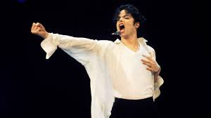
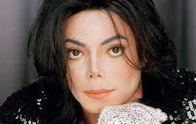
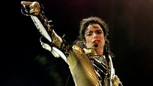
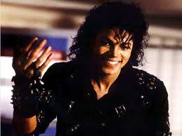
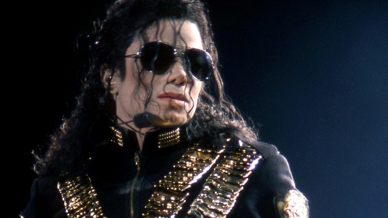

1958–1975: Infância e The Jackson 5Michael era o sétimo de nove filhos de Joseph e Katherine Jackson. A família inteira – incluindo os irmãos mais velhos, Rebbie, Jackie, Tito, Jermaine, LaToya e Marlon, e os mais novos, Randy e Janet – viveram juntos em uma pequena casa de dois quartos, e o pai sustentava a casa a duras penas trabalhando em uma usina siderúrgica. Por vontade da mãe, mas contra o desejo do pai, as crianças tornaram-se Testemunhas de Jeová e passaram a praticar a evangelização de porta em porta. De acordo com as regras rígidas do pai, as crianças eram mantidas trancadas em casa enquanto ele trabalhava até tarde da noite. Entretanto, as crianças escapavam frequentemente para as casas dos vizinhos, onde cantavam e faziam música. Os irmãos mais velhos mexiam na guitarra do pai Joseph sem sua permissão enquanto ele estava trabalhando. Até que um dia Joseph tomou consciência do talento de seus filhos e resolveu ganhar dinheiro com isso, e assim sair de Gary e ir para a Califórnia, para mais tarde serem contratados pela Motown. Na Motown, Michael e seus irmãos gravaram vários álbuns, o que lhes rendeu fama mundial. Com apenas treze anos, Michael, através dos Jackson 5, havia colocado quatro canções no topo das paradas: "I Want You Back", "ABC", "I'll Be There", "The Love You Save". Michael iniciou sua carreira solo quando ainda estava na Motown, quando lançou os álbuns Got to Be There, Ben, Music & Me e Forever, Michael, todos com pelo menos um sucesso mundial. A partir de 1973 a popularidade do grupo começou a diminuir, embora eles tivessem sucessos razoáveis como "I Am Love" e "Dancing Machine". Neste último, durante as apresentações, Jackson simulava um robô dançando. A dança tornou-se bastante popular no mundo todo. Durante sua infância Michael e seus irmãos sofreram constante abuso de seu pai, que batia frequentemente nas crianças, e as aterrorizava psicologicamente. Os ensaios eram supervisionados pelo pai com um cinto na mão. Certa vez Michael e seus irmãos foram dormir no quarto de um hotel e deixaram a janela aberta. Joseph escalou a janela com uma máscara no rosto e deu um susto nos irmãos, somente para ensiná-los a não deixar a janela aberta quando fossem dormir. Anos depois, Jackson sofreu pesadelos sobre ser sequestrado do seu quarto e chorava com isso. Durante sua entrevista a apresentadora Oprah Winfrey, em 1993, Michael disse que durante sua infância chorou várias vezes por solidão e que muitas vezes vomitava só de ver seu pai. No documentário de 2003, Living with Michael Jackson, do jornalista britânico Martin Bashir, o cantor chorou ao relembrar de sua infância.  1975–1981: Mudança de gravadora e Off the WallEm 1975, os Jackson 5 saíram da Motown e assinaram contrato com a Epic em busca de mais liberdade para produzir suas canções. Como resultado do processo judicial, tiveram que mudar o nome para The Jacksons. Michael foi o principal compositor do grupo, escrevendo sucessos como "Shake Your Body (Down to the Ground)", "This Place Hotel", "Can You Feel It?". Em 1978, Michael co-estrelou The Wiz no papel do Espantalho com sua companheira de gravadora, Diana Ross, como Dorothy. As canções do filme foram arranjadas e produzidas por Quincy Jones, que simpatizava com Michael. Após assinar o contrato com a Epic, em 1978, Michael trabalhou com Quincy em muitos álbuns.Michael começou a gravar Off the Wall durante a primavera norte-americana de 1978. Com a produção de Quincy Jones, Jackson selecionou dez canções as quais formaram seu primeiro álbum solo em idade adulta. Off the Wall causou furor entre o público e a mídia especializada. A mistura de black music e disco do álbum tornou-se referência nos anos que se seguiram. Michael ganhou seu primeiro Grammy com o compacto de "Don't Stop 'Til You Get Enough", uma canção escrita e produzida por ele. Foram dois anos de constante exposição no rádio e na televisão. Foi a primeira vez que um artista colocou quatro canções de um mesmo álbum entre as dez mais tocadas tanto no Reino Unido quando nos Estados Unidos. Em 1980, Off the Wall já era o álbum de black music mais vendido da história. Os números chegam, atualmente, a 20 milhões de cópias. Apesar de ter vendido com um único álbum solo mais do que os The Jacksons haviam conseguido na carreira de 11 anos, Michael resolveu continuar com os irmãos, atendendo a pedidos da mãe. Em 1979 durante um ensaio, Jackson caiu e quebrou o nariz, sendo obrigado a operar o nariz.[13][14] Sua primeira rinoplastia não foi um completo sucesso, e Jackson reclamou de dificuldades respiratórias que afetavam sua carreira. Ele foi submetido ao Dr. Steven Hoefflin, que realizou a segunda rinoplastia de Jackson e outras subsequentes operações.[14][15] Depois de lançar mais um disco com os The Jacksons em setembro de 1980 e cumprir uma apertada agenda de divulgação - que incluía especiais no rádio e uma sequência de 39 espetáculos pelos Estados Unidos -, Michael tinha pouco tempo para gravar o álbum que sucederia Off the Wall.  1975–1981: Mudança de gravadora e Off the WallMichael aceitou um convite do cineasta Steven Spielberg para narrar a história do filme E.T., O Extraterrestre (1982) em um disco que ainda incluiria a canção inédita "Someone in the Dark". Jackson resolveu trabalhar nos dois projetos simultaneamente, o que gerou desconforto na Sony Music. O disco narrado por Michael seria distribuído pela MCA Records no mesmo mês em que a gravadora tinha agendado o lançamento de Thriller. A Sony Music entrou na Justiça e conseguiu cancelar o projeto. Enquanto isso, Jackson concluiu as gravações de Thriller. O álbum foi finalizado em seis meses e lançado em novembro de 1982, depois de vários adiamentos.Thriller é atualmente o álbum mais vendido da história, com mais de 110 milhões de cópias vendidas no mundo. Nos dois anos que se seguiram ao lançamento, o álbum foi a maior sensação da América, influenciando não somente a música, como também a dança, a moda e a televisão. Thriller chegou à primeira posição entre os mais vendidos dos Estados Unidos no dia 21 de fevereiro de 1983 e permaneceu na posição por 37 semanas no primeiro lugar e mais 43 no top 10, um recorde. Sete compactos foram lançados e dois conquistaram o primeiro lugar, "Billie Jean" e "Beat It". Thriller foi também um marco na luta contra a discriminação racial na indústria fonográfica. Jackson tornou-se o primeiro artista negro cuja música estava no ar na MTV, com o videoclipe de "Billie Jean", dirigido por Steve Baron. A canção "Beat It", que tinha participação do guitarrista Eddie Van Halen, fez rádios de rock, na época orientadas a um público essencialmente branco, tocarem a canção de um negro; e fez rádios de black music tocarem rock. Um feito inédito até então. Durante a divulgação de Thriller na noite de 16 de maio de 1983, 3 mil celebridades norte-americanas lotaram um teatro em Los Angeles para assistir a uma apresentação comemorativa dos 25 anos da gravadora, chamada Motown 25: Yesterday, Today, Forever. De suas casas, 50 Milhões de norte-americanos acompanharam pela TV a apresentação dos vários artistas negros, até a entrada dos Irmãos Jacksons, que vão embora e deixam Michael Jackson sozinho no palco. Ele começou a cantar "Billie Jean", sucesso do álbum que havia lançado seis meses antes. De repente, Michael parou de cantar, andou até o canto esquerdo do palco e voltou deslizando de costas. Naquela noite, mais do que imortalizar o passo de dança criado e batizado décadas antes pelo dançarino Bill Bailey como "Moonwalk" (algo como "passo da lua"), Michael Jackson consagrou-se como o Rei do Pop. "Foi aquele momento que cristalizou o status de celebridade de Michael Jackson", disse a revista americana Rolling Stone. "Moonwalk, no mundo do entretenimento, só é comparável ao andar de vagabundo de Chaplin, à sequência de Gene Kelly em Dançando na Chuva e aos passos de Fred Astaire no filme Núpcias Reais". Depois daquela apresentação, tanto Fred Astaire quanto Gene Kelly foram atrás de Jackson para parabenizá-lo por usar tão bem o passo criado por Bailey. Foi então que o cantor estreou o chapéu e jaqueta pretos e a famosa luva de lantejoulas. Em dezembro daquele ano, Michael e o diretor John Landis estabeleceram também novos horizontes para a produção de videoclipes, quando um curta-metragem de 14 minutos foi lançado para promover a canção "Thriller" ao custo de 600 mil dólares, elevado para os padrões da época. Também em tempo para o Natal de 1983, um segundo dueto entre Jackson e Paul McCartney chegou às lojas. "Say Say Say" tornou-se o sexto número um de Michael na América e o nono do ex-Beatle.  1984–1985: Pepsi, "We Are the World" e carreira nos negóciosEm 27 de janeiro de 1984, Michael Jackson sofreu um acidente enquanto gravava o segundo comercial para a televisão do contrato de 5 milhões de dólares que havia assinado para ser garoto-propaganda da Pepsi. O cabelo do astro foi incendiado por fogos de artifício. Ele teve queimaduras de segundo grau no couro cabeludo. Michael foi liberado do hospital um dia depois da internação.Em março de 1984, Jackson lançou em VHS o videoclipe de "Thriller" acompanhado por um documentário sobre os bastidores da produção. A fita, intitulada Making Michael Jackson's Thriller, vendeu 4 milhões de unidades e tornou-se a mais vendida de todos os tempos, até ser superada pela do filme Titanic, de James Cameron, em 1997. Em maio seguinte, Thriller entrou para o livro dos recordes e Michael ganhou uma estrela na Calçada da Fama, em Hollywood. Ao final de 1984, Jackson já havia conquistado 2 prêmios por Thriller. Na cerimônia do Grammy Awards daquele ano, o astro estabeleceu um novo recorde conquistando oito prêmios. A marca foi igualada pelo guitarrista mexicano Carlos Santana com o álbum Supernatural, em 2000. Com o sucesso de Thriller, o interesse do público e da imprensa por Jackson era crescente. Tornaram-se notórios não somente os hábitos pouco usuais do músico, mas também os trabalhos humanitários de Michael, especialmente em prol de crianças e adolescentes. Em maio de 1984, Jackson participou do lançamento de uma campanha contra as drogas na Casa Branca como convidado do presidente americano na época Ronald Reagan. Em julho, Michael anunciou que reverteria todos os lucros da turnê do álbum Thriller para a caridade. A Victory Tour, com 55 concertos em cidades dos Estados Unidos e Canadá, arrecadou 75 milhões de dólares. A turnê quebrou o recorde de maior público, antes detido por Elvis Presley. Michael levava seus animais de estimação exóticos para todo lugar. Um chimpanzé chamado Bubbles e uma cobra chamada Muscles. Em 1985, Michael se uniu a Lionel Richie e Quincy Jones na missão de arrecadar fundos para a campanha USA for Africa. A ideia era gravar uma canção cujos lucros seriam revertidos para reduzir os índices de mortalidade pela fome no continente africano. Lionel compôs, no piano, a melodia. Michael escreveu a letra em um único dia. O resultado eles chamaram de "We Are The World". Para gravar a canção, Quincy Jones convidou 44 celebridades da música e televisão, incluindo Cyndi Lauper, Diana Ross, Ray Charles e Stevie Wonder. O projeto arrecadou 200 milhões de dólares para a luta contra a fome na Etiópia. Michael ganhou dois Grammys por "We Are the World": "Canção do Ano" (com Lionel Richie) e "Gravação do Ano" (com Quincy Jones). A canção recebeu também outros dois prêmios na cerimônia. Jackson começou uma carreira empresarial. Ele comprou direitos autorais do catálogo Northern Song, que continha canções dos Beatles, Elvis Presley entre outros. McCartney ficou chateado com Jackson e desde então a amizade dos dois parece ter acabado.  1986–1990: Mudança na aparência, Bad, filmes, auto-biografia e NeverlandEm 1986 o público conheceu uma das canções selecionadas para fazer parte do que seria seu próximo de estúdio: Bad. A canção Another Part of Me fazia parte da trilha-sonora do filme Captain EO, produzido por George Lucas e Francis Ford Coppola. Michael estrelava o curta-metragem filmado todo em 3D para a Disney ao custo de um milhão de dólares por minuto. Até 1998, o filme ainda era exibido em parques temáticos da companhia. Em 2009, depois da morte do astro, a Disney decidiu resgatar o musical e colocá-lo em cartaz novamente.Jackson lançou Bad em agosto de 1987, com dois anos de atraso. Para a mídia especializada, o álbum era pouco ousado e uma decepção em comparação com Thriller (1982) ou Off the Wall (1979). Em contrapartida, o público respondeu bem e fez de Bad um grande sucesso. Não tão grandioso quanto Thriller, mas um grande sucesso. O álbum vendeu 30 milhões de cópias em todo o mundo e permaneceu durante algum tempo como o segundo mais vendido da história. Bad ainda teve um recorde de nove canções lançadas como compacto. Cinco delas chegaram à primeira posição nos Estados Unidos: "I Just Can't Stop Loving You" (com a estreante Siedah Garrett), "Bad", "The Way You Make Me Feel", "Man in the Mirror" e "Dirty Diana". Foi a primeira vez que um artista colocou cinco canções de um mesmo álbum em primeiro lugar, feito que se repetiu com Mariah Carey em 1990 e Katy Perry em 2010, ambas emplacando 5 canções em 1° lugar no Top Hot 100 da Billboard. Isso sem contar "Another Part of Me" que ficou um primeiro lugar nos charts de R&B. Durante a divulgação de Bad, a publicação de excentricidades sobre a vida de Michael adquiriu contornos enfáticos. Verdades ou mentiras, tornaram-se parte da imagem que se criou em torno de Jackson. Foi noticiado, por exemplo, que o astro tentou comprar os ossos e roupas de John Merrick, o Homem Elefante. Que ele teria uma parte do próprio nariz, retirada em cirurgia plástica, conservada em uma jarra dentro de casa. Que dormia em uma câmara hiperbárica para retardar o envelhecimento. Mais tarde essas notícias foram desmentidas pelo próprio. Na época, as alterações na aparência de Michael eram visíveis e geravam muita polêmica. Os jornais especulavam sobre dezenas de cirurgias plásticas, apesar do músico confirmar apenas duas, e possíveis razões para a mudança na cor da pele dele, que estava branca. Especialistas acreditavam que Michael teria se submetido a um tratamento intensivo com hidroquinona, uma substância capaz de clarear a pele. Em 1993, durante entrevista à apresentadora Oprah Winfrey, Jackson afirmou sofrer de vitiligo, uma doença autoimune não contagiosa em que ocorre a perda da pigmentação. Posteriormente o cantor ainda contraiu outra doença de pele, ele foi diagnosticado com lúpus no início dos anos 1990.[18] Essa doença também causa alteração na pele, o sistema imune ataca as próprias células e tecidos do corpo, deixando o indivíduo com fortes dores e mais suscetível a outras doenças. Isso explicaria o uso de máscara cirúrgicas em público, e o vício em remédios contra a dor. Devido as suas supostas excentricidades, Michael ganhou o apelido ‘Wacko Jacko’, do tabloide The Sun. Vegetariano, Michael supostamente tinha horror a refrigerantes artificiais, apesar de ter feito uma campanha publicitária milionária para a Pepsi.[19] Entretanto há divergências sobre o suposto vegetarianismo de Michael. A União Vegetariana Internacional afirma que ele não era, pois comia carne de frango Bad foi indicado ao Grammy, Michael inclusive fez uma performance lendária no ano de 1988, onde cantou "The Way You Make Me Feel" e "Man in the Mirror". Ele não ganhou nenhum prêmio, o que gerou revolta no cantor. "Eles julgaram minha aparência, não minha música." Em setembro de 1987, Michael deu início à Bad World Tour, a primeira turnê mundial dele como artista solo, que passou em 15 países e atraiu 4,4 milhões de pessoas aos estádios - um recorde de público que seria superado pelo próprio Michael duas vezes, em 1992 e 1997.  1991–1993: Dangerous, Heal the World Foundation e Super Bowl XXVIIDepois de um ano longe das paradas de sucesso, Michael pôde ser ouvido novamente nas rádios em novembro de 1991 com a canção "Black or White", o primeiro compacto lançado do álbum Dangerous. Jackson convidou o diretor John Landis (de "Thriller") para gravar o videoclipe da canção. Quando foi transmitido, o curta-metragem, que tinha dez minutos de duração, gerou controvérsia, mostrando o astro quebrando vitrines de lojas e destruindo um carro com um pé-de-cabra.O videoclipe foi transmitido simultaneamente para 27 países perante uma audiência estimada em 500 milhões de pessoas: um novo recorde. A reação foi imediata. O segmento considerado violento foi retirado do curta-metragem. Michael se retratou em um comunicado dizendo que o comportamento simulava o instinto de uma pantera, animal em que se transforma durante a história. O vídeo também ficou famoso por mostrar na televisão uma das primeiras metamorfoses geradas em computador. O videoclipe contava com a participação de Macaulay Culkin. Duas semanas depois desse enorme feito, Dangerous foi lançado. O álbum reunia 14 canções inéditas - 12 delas escritas e compostas por Jackson. A produção era, essencialmente, de Teddy Riley, considerado um dos criadores de um novo tipo de som chamado 'new jack swing'. Dangerous gerou nove compactos, incluindo três números um nos Estados Unidos: "Black or White", "Remember the Time" e "In the Closet". O álbum ficou mais de dois anos entre os mais vendidos e foi adquirido por 34 milhões de pessoas no mundo, superando Bad como o segundo melhor desempenho da carreira do cantor. Este é o álbum de um artista masculino mais vendido da década de 1990. Jackson fundou a "Heal the World Foundation" em 1992. A fundação ajudava milhões de crianças ao redor do mundo. Também enviou milhões de dólares para todo o mundo para ajudar as crianças ameaçadas pela guerra e por doenças. Em junho de 1992, Michael saiu em turnê para divulgar o álbum e quebrou recordes de público firmados anteriormente por ele mesmo durante a Bad World Tour, em 1987 e 1988. A turnê foi interrompida em 1993 depois que ele foi acusado de abusar sexualmente de um menor. Apesar disso, a investida levou para os estádios 3,5 milhões de pessoas em 69 concertos - uma média maior do que qualquer outra turnê até então. Todos os lucros da Dangerous World Tour foram revertidos para caridade. A Dangerous World Tour foi a turnê que utilizou mais equipamento do mundo. O palco demorava 3 dias para ser montado e eram necessárias mais de 60 carretas, 20 caminhões e 2 jumbos 747 para transportar o equipamento de 2 toneladas e meia que eram: 168 homens trabalhando, 2 telões de cristal líquido, 1000 luzes e mais de 10 mil cabos elétricos. A Dangerous World Tour foi transmitida ao vivo pela HBO e foi a turnê de maior audiência da televisão. Para retomar a divulgação do álbum Dangerous nos Estados Unidos, interrompida desde que saiu em turnê, Michael programou dois grandes eventos televisivos em 1993. No dia 31 de janeiro, ele se apresentou no intervalo do Super Bowl XXVII, a famosa final do campeonato de futebol americano organizado pela NFL e exibido, nesse ano, pela rede de televisão norte-americana NBC diante de uma audiência de 103,4 milhões de pessoas,. Ao contrário de anos anteriores, ele foi a única atração do tradicional "show do intervalo". Devido ao status de estrela de Michael, a rede de televisão norte-americana FOX (concorrente da NBC) deixou de exibir, pela primeira vez, um compacto com os melhores momentos do Super Bowl disputado no ano anterior (Super Bowl XXVI); esse compacto era tradicionalmente exibido quando a emissora não detinha os direitos de transmissão da partida. A performance de Michael foi impressionante. Houve uma explosão e o "Rei do Pop" saiu pulando do chão acompanhado de fogos. Ele pousou e ficou imóvel em sua famosa postura de estátua por vários minutos, enquanto a multidão ia ao delírio. Uma chuva de fogos caía sobre o astro, que estava com seu tradicional óculos de sol, bracelete, roupa de militar com detalhes em ouro. Ele virou o rosto e lentamente começou a tirar os óculos, jogou-os e começou a cantar e dançar. Michael cantou três canções: "Jam", "Billie Jean" e "Black or White". O Gran Finale aconteceu após a exibição de uma vídeo-montagem de Michael participando de várias campanhas humanitárias por todo o mundo e, em seguida, 3.500 crianças da região de Los Angeles se juntam a Michael para cantar "Heal the World". Foi o primeiro Super Bowl em que o número do público aumentou durante meia hora de show. Dangerous subiu 90 posições depois da apresentação. Dez dias depois, concedeu uma entrevista à apresentadora Oprah Winfrey que foi assistida por 100 milhões de telespectadores. Foi a primeira vez em dez anos que Jackson aceitou falar com a imprensa. A entrevista também se tornou um dos eventos mais assistidos de todos os tempos. E o álbum Dangerous voltou ao top 10 após um ano de seu lançamento original. Depois da morte Ryan White, vítima de HIV, Michael lançou o single Gone Too Soon, e chamou atenção do mundo para pesquisas sobre a cura da AIDS, que na época havia um grande preconceito por parte das pessoas. Durante a era Dangerous, Jackson visitou vários lugares do mundo, incluindo Iraque e Egito. Na África quando desembarcou em Gabão, foi recebido por mais de 100 mil pessoas, com um enorme cartaz dizendo "Bem-vindo a casa Michael!". Em sua viagem á Costa do Marfim, Jackson foi coroado "Rei Sani" pelo chefe da tribo. Em 1993 recebeu o "Grammy Legend Award" por ser uma lenda viva e por sua contribuição ao mundo da música. |